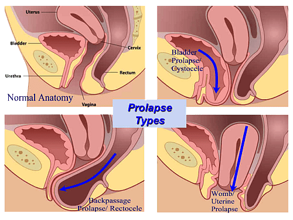
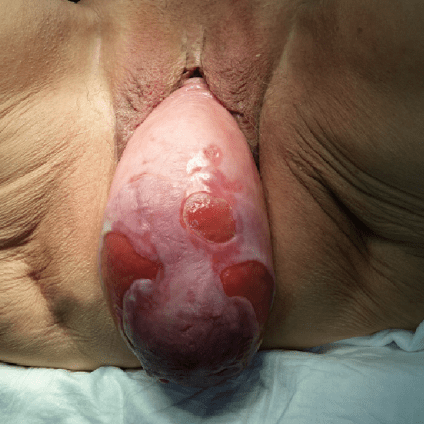

Основні захворювання, які лікує доктор
Опущення або випадання піхви - аномалія жіночої статевої системи, що зустрічається найбільш часто. У структурі показань до планової хірургічної корекції, випадання матки і піхви займає третє місце після доброякісних пухлин і ендометріозу. У віці старше 50 років з таким діагнозом стикається практично кожна друга жінка.
Додаткову групу хворих з опущеними статевих органів складають пацієнтки з пролапсом кукси піхви, кукси шийки матки після радикальних операцій на матці: видалення або надпіхвової ампутації матки.
У 85,5% хворих з опущеними і випаданням внутрішніх статевих органів розвиваються функціональні розлади суміжних органів:
• нетримання сечі - у 70,1% пацієнток;
• порушення дефекації - у 36,5%;
• біль при статевому акті - у 53,3% хворих.

Частота опущення статевих органів, розладів сечовипускання збільшується з віком.
Нетримання сечі спостерігається у 30% жінок у віці до 55 років і у 75% - до 70 років.
Класифікація
Класифікація М.С. Малиновського - одна з найпростіших, зручних і часто застосовуваних. Розрізняють три ступені опущення (мал.1):
• I ступінь - шийка матки опущена не більше ніж до входу в піхву;
• II ступінь - шийка матки розташована нижче входу в піхву, а тіло матки - вище нього;
• III ступінь - вся матка знаходиться за межами входу в піхву.
мал. 1:
сечовий міхур - a
нормально розташована матка - b
піхва - c
вхід до піхви - d
шийка матки - e
неправильне положення матки (3 ступені опущення) - f
В останні роки, в своїй практиці, ми використовуємо Міжнародну класифікацію за системою POP-Q (Pelvic Organ Prolapse Quantification) - це кількісна класифікація, заснована на вимірі дев'яти параметрів:
Аa - уретровезікальний сегмент;
Ва - передня стінка піхви;
Аp - нижня частина прямої кишки;
Bp - вище леваторов;
С - Cervix (шийка);
D - Douglas (заднє склепіння);
TVL - загальна довжина піхви;
GH - статева щілина;
PB - промежинна тіло.
Згідно з наведеною класифікацією, виділяють наступні ступені пролапсу:
Стадія 0 - немає пролапсу. Точки Аа, Ар, Ва, Вр - все 3 см; точки С і D мають значення зі знаком мінус.
Стадія I - найбільш випадає частина стінки піхви не доходить до гімена на 1 см (значення> -1 см).
Стадія II - найбільш випадає частина стінки піхви розташована на 1 см проксимальніше або дистальніше гімена.
Стадія III - найбільш випадає точка мусить бути на 1 см дистальніше гіменальной площині, але при цьому загальна довжина піхви (TVL) зменшується не більше ніж на 2 см.
Стадія IV - повне випадання. Найбільш дистальна частина пролапсу виступає більш ніж на 1 см від гімена, а загальна довжина піхви (TVL) зменшується більш ніж на 2 см.
Причини виникнення
Основна причина розвитку опущення статевих органів - неспроможність тазового дна в забезпеченні повноцінної підтримки тазових органів. Пролапс статевих органів слід розглядати як грижу тазового дна. Розвиток опущення піхви та матки у жінок - наслідок комплексу порушень, серед яких неодноразові пологи через природні родові шляхи - важливий, але не єдиний фактор ризику.
Факторами ризику розвитку пролапсу геніталій є:
• травматичні пологи (великий плід, тривалі, повторні пологи, вагінальні розроджувальні операції, розриви промежини);
• неспроможність сполучнотканинних структур у вигляді «системної» недостатності, що виявляється наявністю гриж інших локалізацій - дисплазія сполучної тканини;
• порушення синтезу стероїдних гормонів (естрогенна недостатність);
• хронічні захворювання, що супроводжуються порушенням обмінних процесів, мікроциркуляції.
Клінічна картина
Основні ознаки пролапса тазових органів:
• зяяння статевої щілини в спокої і / або при напрузі;
• освіту, вибухає з статевої щілини (симптом випадання стінок піхви і матки);
• відчуття чужорідного тіла;
• дискомфорт в області промежини;
• незручність при ходьбі;
• тягнуть болі внизу живота
• діаспорян (болючий статевий акт);
• кров'янисті виділення зі статевих шляхів після статевого акту.
Зміщення матки донизу порушує кровообіг в малому тазу, сприяє виникненню застійних процесів, що супроводжуються болями тягнучего характеру, почуттям тиску внизу живота, болями в попереку, крижах, що посилюються до кінця дня або під час і після ходьби.
Постійне висушування і травмування стінок призводить до утворення тріщин, саден, виразок, а також виникнення кров'яних виділень із статевих шляхів. У клімактеричному періоді клінічна картина ускладнюється ознаками атрофії піхви. Зниження природних протиінфекційних бар'єрів призводить до частих запальних процесів.

Характерна особливість симптомокомплексу, що розвивається при опущенні і випаданні внутрішніх статевих органів, - наявність функціональних порушень не тільки статевих органів, а й інших органів малого таза. Порушення сечовидільної функції у пацієнток представлені в основному скаргами на часте сечовипускання і нетримання сечі при напрузі.
При запущених формах пролапсу (повному випаданні матки) найбільш характерно утруднене сечовипускання аж до гострої затримки сечі. При важкій функціональної недостатності тазового дна виникають порушення дефекації, нетримання газів і калу.